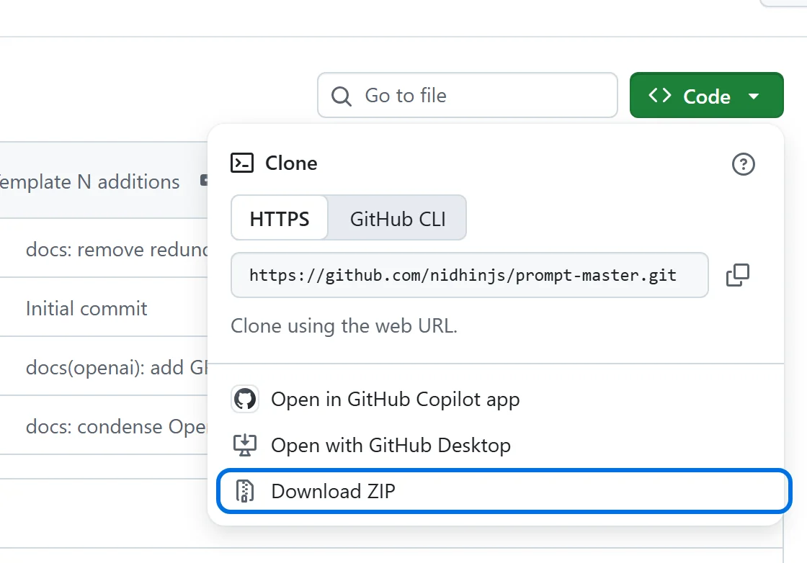

Prompt Master для Claude
Один нормальный запрос вместо пяти переспрашиваний
Что понадобится
- Аккаунт Claude. Скиллы есть на всех тарифах, даже на бесплатном
- Компьютер: claude.ai в браузере или приложение Claude
- Сам скилл бесплатный, лицензия MIT
Шаг 1 из 4
Скачай скилл
- Открой Prompt Master на GitHub
- Нажми зелёную кнопку Code, потом Download ZIP

prompt-master-main.zip. Распаковывать не нужноШаг 2 из 4
Разреши Claude работать с файлами
- Открой claude.ai или приложение Claude
- Зайди в Settings, раздел Capabilities
- Включи Code execution and file creation. В новом меню он называется Create and edit files
Шаг 3 из 4
Загрузи скилл в Claude
- В меню слева открой Customize, потом Skills
- Нажми «+», затем Create skill и Upload a skill
- Выбери скачанный
prompt-master-main.zip
В Claude Code через терминал
git clone https://github.com/nidhinjs/prompt-master.git ~/.claude/skills/prompt-mastergit clone https://github.com/nidhinjs/prompt-master.git "$HOME\.claude\skills\prompt-master"Шаг 4 из 4
Пиши запрос через /prompt-master
Начни сообщение с /prompt-master и опиши задачу как есть, можно коряво. Если чего-то не хватает, Claude задаст не больше трёх вопросов и выдаст готовый промпт. Выбери пример над окном
Когда в запросе чего-то не хватает
Ответы примерные, у тебя ИИ скажет своими словами
Готово. Теперь один запрос вместо пяти переспрашиваний, и лимита хватает дольше
Если что-то пошло не так
При загрузке ошибка: Upload failed или Plugin validation failed
Скачай запасной архив: в нём те же файлы, только папка называется prompt-master, как просит Claude. Загрузи его так же, через Upload a skill
В Customize нет раздела Skills
Включи Code execution and file creation в Settings, раздел Capabilities (шаг 2). В рабочем аккаунте скиллы включает администратор
Скачалась папка, а не ZIP
Так делает Safari на Mac. Нажми на папку правой кнопкой и выбери «Сжать», получится ZIP
/prompt-master не срабатывает
Проверь, что переключатель рядом с Prompt Master в Customize, раздел Skills, включён, и начни новый чат
Claude сразу пишет промпт, без вопросов
Так и должно быть, если в запросе всё понятно. Вопросы он задаёт, только когда чего-то не хватает, и не больше трёх